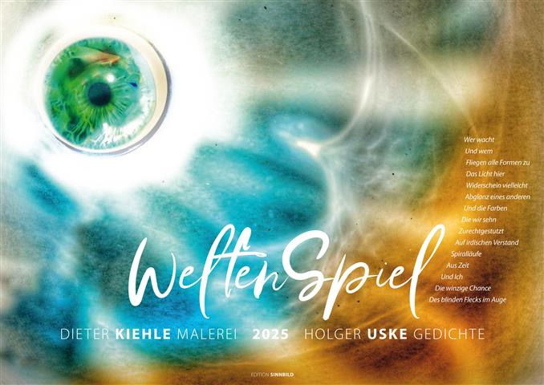

Bilder von Dieter Kiehle, Lyrik von Holger Uske. Gestaltung edition sinnbild Andreas Kuhrt.

Seit Anfang Oktober 2024 ist ein neuer Kunstkalender der beiden Suhler Dieter Kiehle und Holger Uske erhältlich. Zum vierten Male fanden sie zusammen, um Bild- und Wortideen zueinander zu bringen und gemeinsam mit dem Gestalter Andreas Kuhrt daraus ein Gesamtkunstwerk zu formen, das Interessenten ein ganzes Jahr lang begleiten kann. Den Bildern von Dieter Kiehle fügte Holger Uske sensible, oft auch inhaltlich kontrastierende oder vertiefende Gedichte hinzu, die Andreas Kuhrt in inzwischen bewährter Weise zueinander ins Verhältnis setzte. Nach „WegZeichen" 2022, „LichtZeichen" 2023 und „LebensZeichen" 2024 gaben die Beteiligten nun dem Kalender für 2025 den Titel „WeltenSpiel".
Im neuen Kalender sind insgesamt 14 bildkünstlerische Blätter enthalten. Dank der Idee, erstmals auch das Titelblatt mit einem Gedicht zu bereichern, sind ihnen 13 lyrische Arbeiten zugesellt. Der in dieser Art in der Region einzigartige Kalender bringt neue Arbeiten zweier anerkannter Suhler Künstler zusammen, deren Wirkung der ebenfalls schon viele Jahre hier erfolgreich wirkende Fotograf und Gestalter durch seine Arbeit zur vollen Geltung bringt.
Der nur in kleiner Anzahl aufgelegte Kalender ist in den beiden hiesigen Buchhandlungen Buchhaus Suhl und Buchhandlung am Topfmarkt erhältlich.
Wie wunderbar du
Deinen Leib wiegst
Her und hin zu mir und
Brauchst nicht einmal Wind dafür
Wär' ich ein Mensch
Ich könnte schon
Deine nahe Wärme spürn
So aber wank' ich fern
Derselbe Boden unter uns
Dasselbe Wasserraunen
Sogar das Licht
Dürfen wir uns teilen
Wär' ich ein Mensch –
Komm kosten
Schwingst du deine Blätter
Es ist immer schon alles da


Tropfenfee
Aus mir wird noch
Kannst du glauben
Eine richtige Fee
Was weißt du schon
Von uns als Embryo?
Zieh nicht zu früh
An meinem Zopf
Halt dein Lachen zurück
Auch du hast einst
Als Tropfen angefangen
Wurdest nur keine Fee
Hast deine Chance vertan
Fürs nächste Mal
Nimm noch mal Maß
An mir. Ich bin
Auf meinem Weg
Vor dem Ausflug in die Nacht
Beginnen die Häuser zu summen
Wellenreihen ruhen rot
Eine Barke wiegt das Licht
Hinterm Dorf die Felsen
Prahlen mit ihrem Blau
Bevor auch sie Dämmer überzieht
Dann aber treten aus allen Pforten
Von den Wänden angeregt
Fröhlich summende Menschen
Bis ihre Sätze springen
Hin zum Wein, zur Kühle
Am Ufer dieses Tags